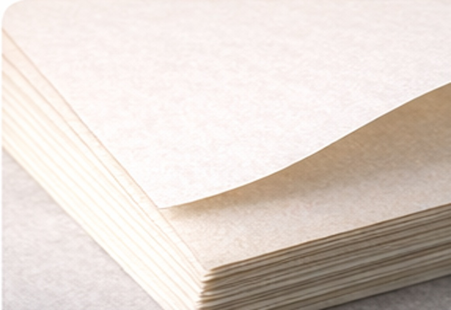
SC마닐라지
기본 단상자에 가장 폭넓게 쓰이는 재질입니다. 적당한 백색감과 안정적인 인쇄 표현이 장점입니다.
표면지와 종이 등급만 빠르게 확인할 수 있도록 핵심 내용만 남겨 다시 정리했습니다. 골판지 재질 선택 전, 인쇄 인상과 강도 기준을 한 번에 비교해 보세요.
패키지의 기본 인상을 결정하는 재질 영역입니다. 같은 구조라도 재질에 따라 인쇄 밀도, 채도, 촉감, 브랜드 분위기가 달라집니다.

기본 단상자에 가장 폭넓게 쓰이는 재질입니다. 적당한 백색감과 안정적인 인쇄 표현이 장점입니다.
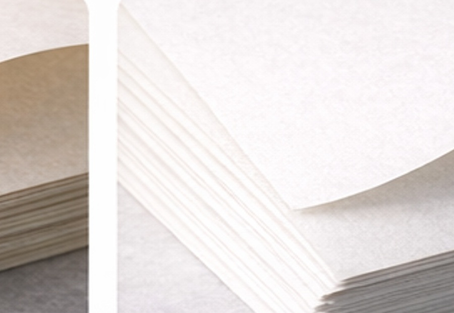
부드러운 톤과 깔끔한 표면감으로 화장품, 건강식품, 선물 박스에 많이 쓰입니다.
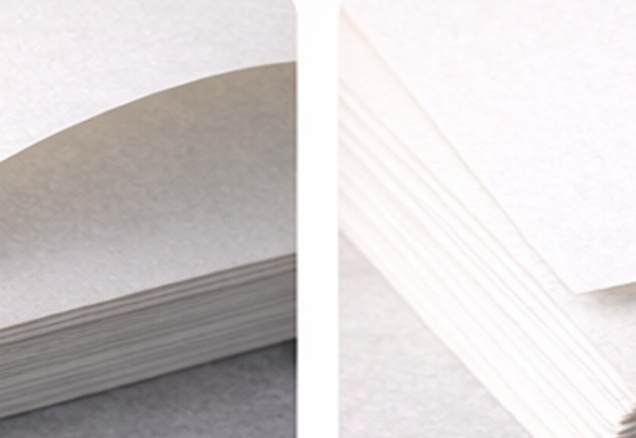
더 높은 밀도감과 정돈된 표면으로 고급 패키지 인상에 유리한 재질입니다.
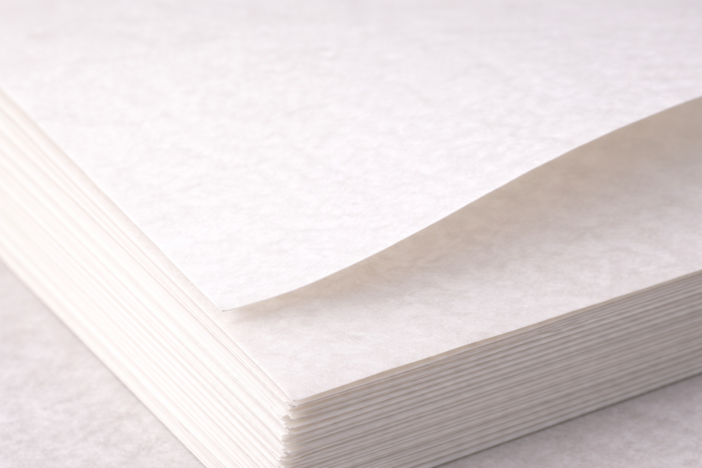
매끈하고 또렷한 인쇄 결과를 노릴 때 좋은 선택지입니다. 선명한 브랜딩형 패키지에 적합합니다.
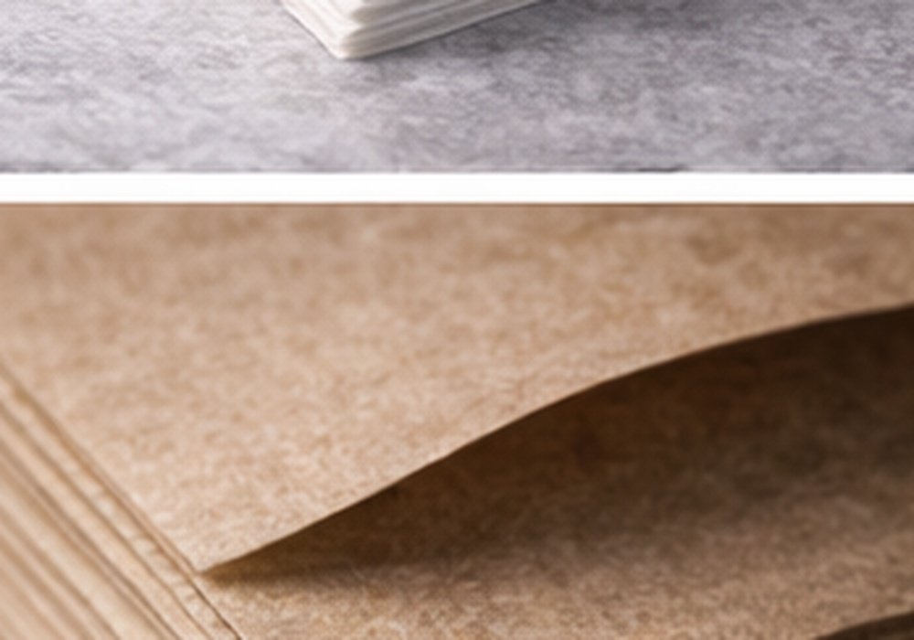
내추럴하고 친환경적인 분위기를 줄 때 활용합니다. 식품, 리빙, 핸드메이드 패키지에 잘 어울립니다.
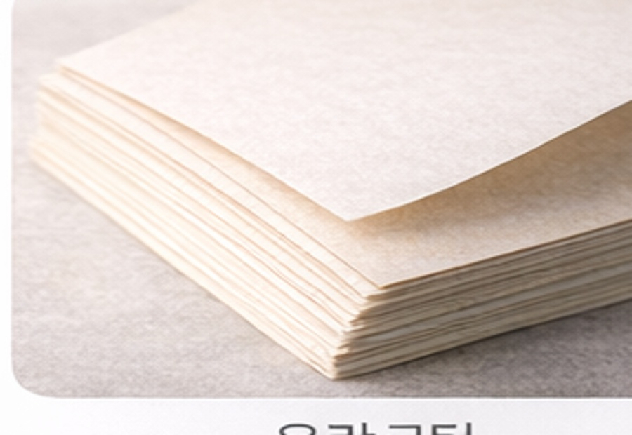
검은 바탕이나 특수 질감을 통해 존재감을 높이는 재질입니다. 박인쇄와 조합할 때 효과적입니다.
표면 보호와 시각적 인상을 동시에 만드는 영역입니다. 광택, 반사, 질감 차이를 비교하며 제품 성격에 맞는 방향을 고를 수 있습니다.
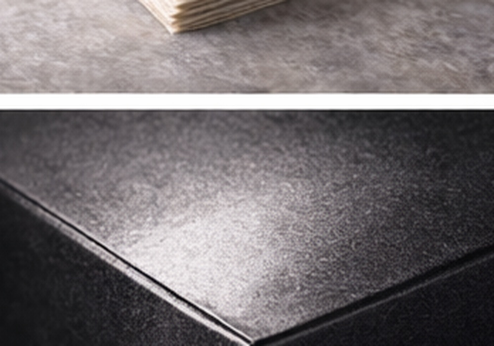
표면 보호와 기본 광택을 더하는 가장 범용적인 후가공입니다. 실무에서 가장 많이 검토하는 선택지입니다.
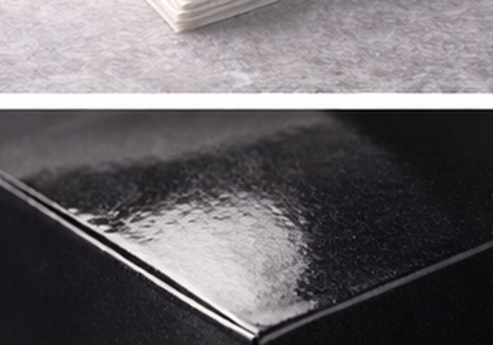
반짝임이 살아 있어 시선 집중도가 높습니다. 화려하고 선명한 패키지에 잘 맞습니다.
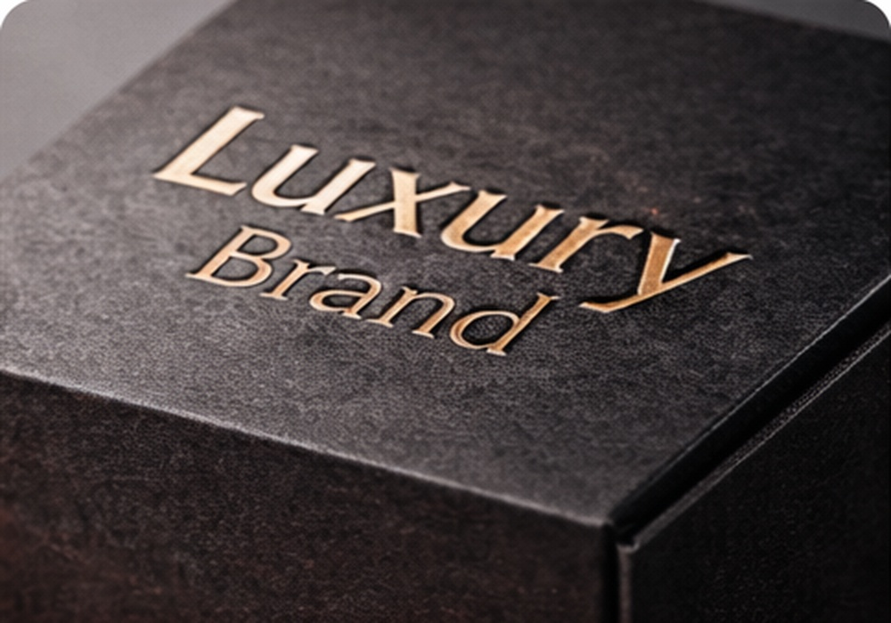
반사를 줄이고 차분한 고급감을 줍니다. 브랜드 패키지나 프리미엄 인상 연출에 유리합니다.
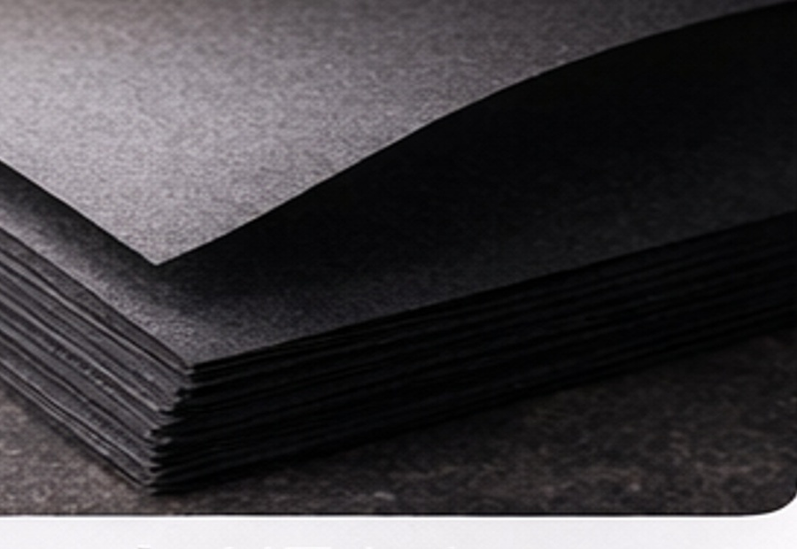
로고나 포인트 영역만 반짝이게 살리는 후가공입니다. 박인쇄와 함께 쓰면 고급감이 크게 올라갑니다.
박은 빛 반사와 색상 대비로 브랜드의 존재감을 높이는 후가공입니다. 제품 성격에 따라 금속감의 온도와 분위기를 다르게 가져갈 수 있습니다.
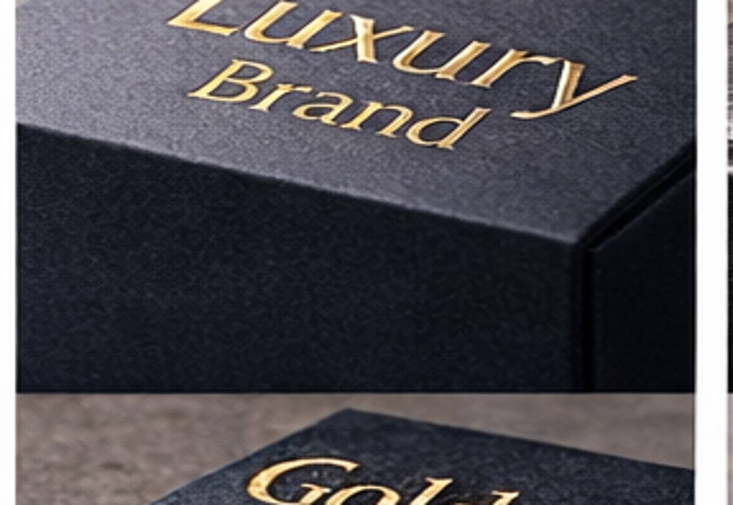
가장 클래식한 프리미엄 표현입니다. 화장품, 선물세트, 기프트 패키지에 안정적으로 잘 어울립니다.
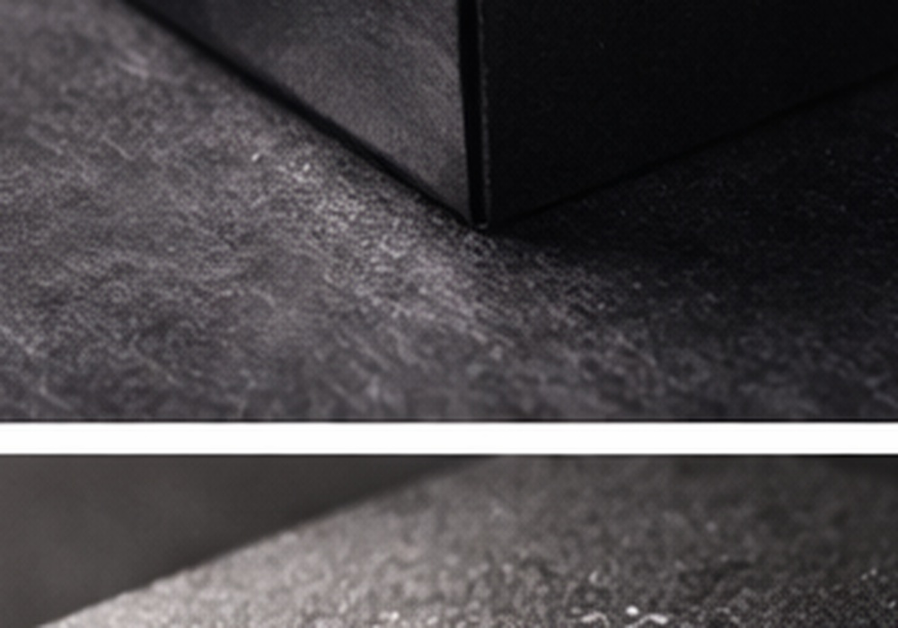
차갑고 정돈된 인상을 주기 좋습니다. 테크, 헬스케어, 미니멀 브랜드에 활용하기 좋습니다.
따뜻하면서도 진중한 느낌을 줍니다. 카페, 베이커리, 리빙 브랜드의 브랜딩에 잘 맞습니다.
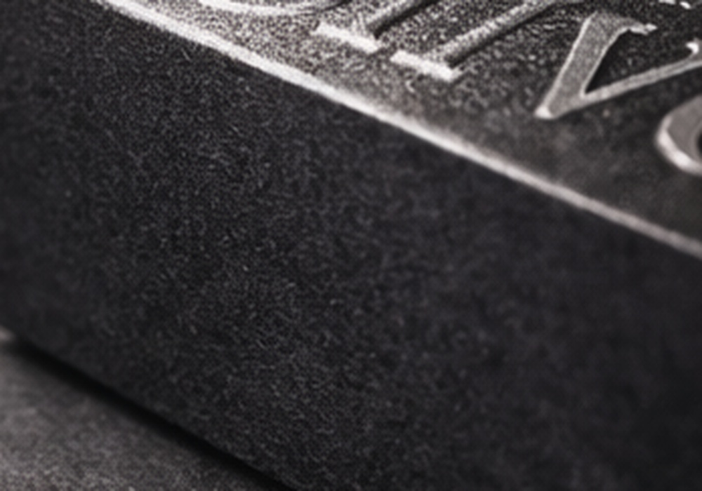
차별화 포인트를 만들기 좋은 색박입니다. 일반 금·은박보다 강한 개성을 줄 수 있습니다.
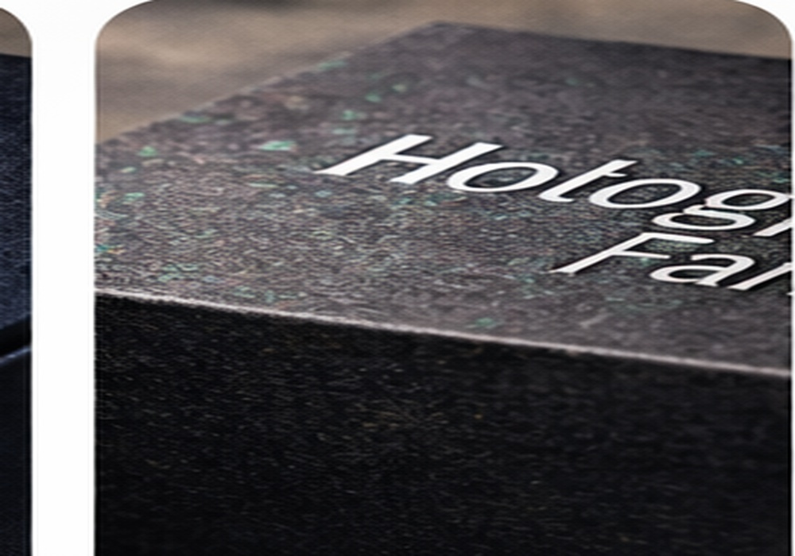
빛에 따라 다채롭게 보이는 효과로 시선을 강하게 끕니다. 한정판, 이벤트, 트렌디한 제품에 적합합니다.